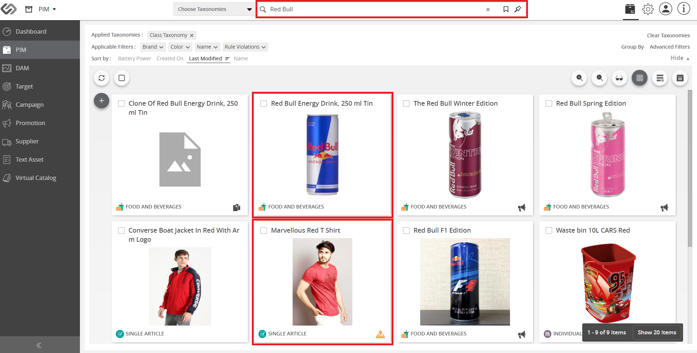

Full-text Search¶
The Full-text Search feature gives the user the ability to search for a product or asset by using the text to search and match the text within the product or asset.
| Key Term: |
|
| Description: |
|
| Related topics: | |
| Application: |
|
How-to: Full-text Search¶
To do a full-text search, follow these steps:
- Log in and go to PIM.

- Click on the Search bar.
- Enter the search keyword(s) (e.g. Red Bull). Then, hit Enter on your keyboard.
- View the search results that are displayed based on the attributes. The attributes, associated with the search words should have been defined as searchable.
Note: The products that contain the keywords (in this example, “Red” and “Bull”) were searched for and displayed. The search results will display: the shirt tagged as ‘Red’ and the energy drink named ‘Red Bull’.
